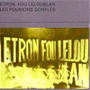
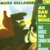
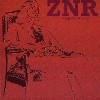

strange music page
overseas * * * recommeded label/etc.
#レコンメデッドレーベル、略してレコメンとか呼ばれてますね。
HENRY COW一派(Chris Cutler)からの繋がりなので、本当はカンタベリの枠内に入れるべきかも。と思ったんですけど、この辺までカンタベリにするとなんだか話がややこしくなりそうなので。
ZNRは好きな10枚の内に入るかも。
|
- Die Knodel
- Pale Nudes
- Present
- MUFFINS
- UNIVERS ZERO
- Etron Fou Leloublan
- Aksak Maboul
- ZNR
|
#Die Knodelの中でコレが一番好きです。室内楽の編成でポップスだったりプログレだったり、綺麗な女性ボーカルも有るし。なんていうかツボを押さえていて、全然聞き飽きません。ジャケもイイですね。
なんだかチロル地方の民謡とかの要素が入ってるらしいんですけど、とにかく軽快でカワイイ曲が集まってます。このページ辺りだと前衛だったり暗かったりしてとっつきにくいCDが多いですけど、これは誰でもOKと思います。
- Die Wurst (Die Noodle!)
- Roll & Rockkragen
- Chinese Lanterns
- Es Wa Enimal Im Erdbeerland...
- Fast Food In A
- Noticknotock
- Seifenblasen Im Mondschein
- Muischka
- Big Rape
- Dschungellied
- Eine Kleine Zugabe
- Christof Dienz (fagotto,hackbrett)
- Alexandra Pedarnig (bass)
- Michael Ottl (guitars)
- Julia Fiegl (violin)
- Walter Seebacher (clarinet)
- Cathi Aglibut (violin,viola)
- Andreas Lackner (trumpet,flugelhorn,bass)
- Margret Koll (harp)
- Christoph Moser (organ)
- Christian Koll (clarinet)
- Josef Seeber (trumpet)
RECREC MUSIC: RECDEC-64 (1995)
- Ab in die Ferien
- Fahr' ma ab - Polka
- Duduradu
- Oberlandler
- Der Xenomorph
- Flaschenachter
- Knodel mit Kraut
- Holzhuttenpolka
- Scarlatti labt gruben
- Ein Stuckerl von Dahoam
- Riddlesnake
- Fasnachtpolka
- Gerostete
- Ein Walzerle fur die Knodel
- Gauteng
- Alexandlra Pedarnig (contrabass,vocals)
- Christof Dienz (fagotto)
- Julia Fiegl (violin)
- Michael Ottl (guitar,vocals)
- Cathi Aglibut (violin,viola,vocals)
- Walter Seebacher (clarinet)
- Margret Koll (harp)
- Andreas Lackner (contrabass,trumpet,flugelhorn)
- Christoph Mose (organization)
RECREC MUSIC: RECDEC-74 (1995)
#えーと何故かAmy Denioの曲を演奏してます。俺、オリジナルの曲のほうが好きなんだけどな....
- Cervello Asonagli
- Benevolent Ears
- Agora
- Memories Dissolved
- Ambaraba Ci Ci Co Co
- Berenice
- Whistling Song
- Long Song
- Non Lo So, Polo
- Finalala
- Alexandra Dienz (bass,hackbrett)
- Christoph Dienz (fagotto)
- Julia Fiegl (giege,holzernes glachter,vocals)
- Margreth Koll (harp)
- Cathi Aglibut (bratsche,vocals)
- Walter Seebacher (clarinet,bass clarinet,hackbrett)
- Michael Ottl (guitars,vocals)
- Andreas Lackner (trumpet,flugelhorn,bass,vocals)
- Amy Denio (accordion,vocals)
- Jeannette d'Armand (vocals)
- William Dean (vocals)
- Jenn Brandon (vocals)
MAKE UP: MAKE-5 (1998)
#録音は1980年で、フレッドフリスプロデュース。1-10が元のアルバムからの音源で、11-17はリミックスみたいです。
ちょうどHENRY COWみたいなチェンバーロックとKNITTING FACTORYとかのアヴァンギャルド・ジャズを足して2で割ったような音かな？
- Angle Dance
- Antidote To Dry-dock
- Zoom Resume
- Horsebones
- Subduction
- Dream Beat
- Under Dali's Wing
- These Castle Children
- Queenside
- Street Dogs
- Angle Dance
- Antidote To Drydock
- Zoom Resume
- Horsebones
- Under Dali's Wing
- QUeenside
- These Castle Children
- Tom Scott (flute,soprano sax,alto sax,clarinets)
- Dave Newhouse (piano,organ,soprano sax,baritone sax,clarinets)
- Billy Swan (bass,guitars,vocals,noises)
- Paul Sears (drums,percussions,sax)
- Fred Frith (prepared piano,guitar,violin on 1.2.4.7.8.9.)
- Dave Golub (clarinet shuffling,shouting and squeaking on 2.3.4.)
- George Daoust (shuffling and shouting on 4.)
CUNEIFORM RECORDS: 55013 (1996)
- Axis
- Duplex Nursing Home
- Downy Cheek Tango
- Angels Wise To The Heat
- Bulg
- Bateau d'Amour
- You Never Call Me Anymore
- Six
- Some Other Spot
- Family
- Ausland
- Amy Denio (voices,saxes,handorgan)
- Wadi Gysi (guitars,e-bow,voices)
- Michael Gerber (double bass,backing voices)
- Will Dowd (drums,percussions)
RECREC MUSIC: RECDECec71
- Dnese
- La Corne Du Bois Des Pendus
- Bonjour Chez Vous
- Combat
- La Musique D'Erich Zann
- La Tete Du Corbeau
- Triomphe Des Mouches
- Michael Berckmans (bassoon,oboe)
- Daniel Denis (drums,percussions)
- Patrick Hanappier (viola,violin)
- Andy Kirk (organ,piano,harmonium)
- Guy Segers (bass)
- Jean Debefve (hurdy-gurdy on 2.)
- Jean-Luc Aime (violin on 3.)
- Ilona Chale (voice on 4.)
- Thierry Zaboitzeff (cello on 6.)
CUNIFORM RECORDS: RUNE-39 (original release 1980)
#フランスのレコメン系グループの3枚目。Fred Frithプロデュースで、6/10曲目ではゲスト参加もしています。
音の方は、「あーうーレコメンだなぁ」唐突な展開とか、ヘンなボーカル（この声嫌いなんだが）とか、フリーキーなサックスとかそんな感じです。ただキーボードのJo Thirionって人の音はとっても面白い、80年代のニューウェーブっぽい薄っぺらい音で単音でピーピー弾いたり、妙なコード感出したりとかしてて、この全体的にヘンなバンドの中で更に一層違和感を持った感じの音を出してます。
とりあえず気になったので検索してみたのですが・・・Etron Fou絡みでしか情報無いですねぇ、詳しい方情報希望。(2004.2.26)

- Nicolas
- Mimi
- Exposition Universelle
- Nicole
- La Musique
- Christine
- Those distant waters
- Upsalla
- lo prefero
- Pas l'sou
- Guigou Chenevier (drums,tenor sax,vocals)
- Bernard Mathieu (soprano sax,tenor sax,chorus)
- Ferdinand Richard (bass,vocals)
- Jo Thirion (farfisa organ,piano,trumpet,chorus)
- Fred Frith (violin,guitars on 6.10.)
GAZUL RECORDS: GA 8661.AR (original release 1982)
- Le Poison Qui Red Fou Part 1:
Ram Ram Va Faire "Pif Pif"
- Ersatz
- Le Poison Qui Red Four Part 2:
Didi, Dans a Chambre!
- Samana
- Roger Tigaux (guitars)
- Alain Rochette (piano,synthesizers)
- Daniel Dennis (percussions)
- Ferdinand Philippot (bass)
- Marie-Anne Pollaris (vocals)
CUNEIFORM RECORDS: RUNE-3 (1985)
#ベルギーのアクサクマブール、1977年の1枚目です。2枚目「ならず者のように」(未聴)がChris Cutler/Fred Frithの参加で有名なグループみたいです。
渋谷タワレコの試聴機で聴いてみました→迷わずレジに持っていきました。
cosってバンド（なんかカンタベリ系のジャズロックらしい）にいたMarc Hollanderという人が中心の録音です。基本線はZNRみたいな韜晦チェンバーなんですけど・・・Opus Avantraみたいな壊れクラシックとかミニマルの要素も。なんだかちょっとシニカルな感じの変にフワフワした感じが魅力的。farfisaの可愛い感じのキーボード音はSTEREOLAB好きな人とかにも受けそうな気がします。
16曲目のライヴ音源では元Henry CowのGeoff LeighとかJurverneのMichel Berckmansとかも参加してますね。
Marc Hollanderって人は80年代からずっと
CRAMMED DISCSってレーベルやってます、結構面白いのが有りそうな感じの。
もー個人的にはこーゆーCDは大好きです。2ndとか関連作をちょっと探してみようと思います。しかしアレですねZNRもDie KnodelもX-Legged SallyもJurverneもUniverse Zeroもベルギーでしたっけ？何かチェンバーロックを育てる土壌でも有るんでしょうか？不思議。(2003.12.29)

- Mercredi Matin
- (Mit 1) Saure Gurke (Aus 1 Urwald Gelockt)
- Animaux Velpeau
- Milano Per Caso
- Fausto Coppi Arrive!
- Chanter Est Sain
DBB (Double Bind Baby)
- Cuic Steppe
- Tous Les Trucs Qu'il Y La Dehors
- Ciobane
- The Mooche
- Vapona, Not Glue
- Glympz
- Three Epileptic Folk Dances
- Mastoul Alakefak
Mastoul, One Year Later (Live)
- Comme On A Dit
- Marc Hollander (farfisa organ,fender rhodes,darbuka,drum machine,saxes,flute,clarinets,xylophone)
- Paolo Radoni (guitars on 4.)
- Jeannot Gillis (violin on 4.)
- Vincent Kenis (accordion on 4.)(guitars,bass on 7.12.13.14.16.)
- Catherine Jauniaux (voice on 4.16.)
- Lucy Grauman (voice on 6.)
- Ilona Chale (voice on 6.)
- Juliette (voice on 10.)
- Chris Joris (fender rhodes on 16-1.)(soprano sax on 17.)
- Frank Wuyts (keyboards on 16-2.)
- Denis Van Hecke (electric cello on 16-2.)
- Michel Berckmans (bassoon on 16-2.)
- Geoff Leigh (sax on 16-2.)
- Lee Schloss (soprano sax on 17.)
CRAMMED DISCS: CRAM-101 (1977)
#これはかーなり前に聴いて(お茶の水のJANISというレンタル屋で借りた)めちゃめちゃ気に入ってたんですけど、CDでは持ってなかったので買いなおしちゃいました。J.Racailleの綺麗なピアノにH.Zazouのえげつない電子音がかぶる実験系室内楽なんですが、このぱっと聴きほのぼのしてる中の毒がたまらなく好きです。自分の中でも1,2を争うほど好きなCDです。(この後のZNRよりも好き)

- Espelisoun d'uno ribambello d'evenimen espetaclous valentin bilot
- Armistice couronne de feuillages
- Le grande compositeur vu de face
- Seynete
- Editioun especialo d'uno griho
- Annie la telie
- Navie description de la formation d'un sentiment
- Avrile en suede
- Proumier assai per s'amourousis d'un moustre
...sera suivie de biens d'autre
prelude aux memories d'un chien
premiere tentative
- trop de douceur ou les trois soeurs: 2eme soeur
- l'amouire
...devait faire partie d'une trilogie intitulee
'trois rayons de lune en plein jour'
- le grande compositeur vu de dos
boston mexicain no.1
boston mexicain no.2
boston mexicain no.3
- la pointe de tes seins est comme un petale de pavot
1er movement: lento suivi d'adagio
2eme movement: mezza, mezzo
3eme movement: dente
- solo un dia
d'apres un poeme de meng chiano, fin de la dynastie
t'ang adapte par wayne hutton et hector zazou
pour les passages en langues etrangeres
- la vieio mostro: part 2
- Joseph Racaille (piano,arp 2600 synthesizer)
- Hector Zazou (arp synthesizer,VCS3,bass,piano,violin)
- Patrick Poportella (bass clarinet
- Andre Jaume (soprano sax,tenor sax)
- David Rueff (alto sax)
- Harvey Neneux (guitars)
- Gilly Bell (arp synthesizers)
- Fernard D'Arles (percussions)
ReR: ZNR1 (original release 1976)
#2枚目、邦題「一般機械学概論」。私は1枚目の方が好きですけど、このアルバムも結構気に入ってます。
- ancien automate mexicain
- ecorcherie romantique pour ceur fele
- enchevetrement desordonne
- alia lasse
- la vieille montre
- tout debout
- printemps au jardin potager vu d'en haut
- triste prose et vieux billards
- garden party
- chanson triste pour faire danser les petites filles
- nu au bain
- serenades italiennes
- trou de ble
- vielle chanson irlandaise
- memorie d'un chien
- un veritable monstre a musque
- printemps au jardin potager vu d'en bas
- deux pieces elementaires pour piano et un prelude
- le fils du grand compositeur
- Hector Zazou (synthesizers,bass)
- Joseph Racaille (piano)
- Harvey Neneux (guitars)
- David Rueff (sax,flute)
- Manfred Le Lalo (sax,clarinet,bandoneon)
- Mme Louize Alcazar (arrangements)